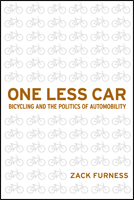

The power of the bicycle to impact mobility, technology, urban space and everyday life
The power of the bicycle to impact mobility, technology, urban space and everyday life


 The power of the bicycle to impact mobility, technology, urban space and everyday life
The power of the bicycle to impact mobility, technology, urban space and everyday life

|  |
One Less CarBicycling and the Politics of AutomobilityZack Furnesspaper EAN: 978-1-59213-613-1 (ISBN: 1-59213-613-3) |
"One Less Car is a serious update and expansion of the social and political history of bicycling. I would own this book for the notes and bibliography alone."
—Robert Hurst, author of The Cyclist's Manifesto and The Art of Cycling
Although millions of people in the United States love to ride bicycles for exercise or leisure, statistics show that only 1 percent of the total U.S. population uses bicycles for transportation—and barely half as many people bike to work. In his original and exciting book, One Less Car, Zack Furness examines what it means historically, culturally, socioeconomically, and politically to be a bicycle transportation advocate/activist.
Presenting an underground subculture of bike enthusiasts who aggressively resist car culture, Furness maps out the cultural trajectories between mobility, technology, urban space and everyday life. He connects bicycling to radical politics, public demonstrations, alternative media production (e.g., �zines), as well as to the development of community programs throughout the world.
One Less Car also positions the bicycle as an object with which to analyze and critique some of the dominant cultural and political formations in the U.S.—and even breaks down barriers of race, class and gender privilege that are interconnected to mobility. For Furness, bicycling can be a form of liberation and a way to support social and environmental justice. So, he asks, Why aren't more Americans adopting bikes for their transportation needs?
Excerpt available at www.temple.edu/tempress
"One Less Car is intelligent, thought provoking, passionate, and well written. It will fit nicely between activist bike books like Chris Carlsson's Critical Mass and more �objective� work on bikes. One Less Car [is] the first work, to my knowledge, that situates cycling as a resistant culture, and it will become the standard on the subject. As a case study of a politicized subculture, it will appeal to scholars and students in cultural studies, communications, and social movements."
—Stephen Duncombe, Professor and Codirector of Comparative Media Studies, MIT
"One Less Car is a very engaging and sophisticated analysis of the bicycle, its culture, and its politics. Zack Furness beautifully contextualizes his work within broader social and historical circumstances, and he insightfully addresses an issue whose political and environmental consequences demand our attention."
—Jeff Ferrell, Professor of Sociology, Texas Christian University; Visiting Professor of Criminology, University of Kent, UK; and author of Tearing Down the Streets: Adventures in Urban Anarchy
"Read it for a thoughtful look into the many faces of bicycling culture and politics."
—Carbusters
"I love One Less Car: Bicycling and the Politics of Automobility for its depth of field. Furness weaves together the myriad sociological, artistic, political and ethical impacts of the bicycle in a scholarly 300-page treatise. Pithy, page-long paragraphs don�t scare me, and terms like �performative critique� and �cultural norms� have the effect on me that Morticia speaking French has on Gomez Addams. I don't expect to finish the book in a week like I did Blink and Snoop and The Professor. This is a book I will be �hitting�, underlining, quoting and, in short, studying in order to face the second half of my lifelong campaign to promote bikes."
—Jacquie Phelan, aka. �Alice B. Toeclips�, Mountain biking pioneer, three-time National Off-Road Bicycle Association champion, writer, and founder of the Women's Mountain Bike & Tea Society (WOMBATS)
"[Furness'] book is a study of community organising and social movements, sub-cultures and social media, and the politics of resistance.... There [are] fascinating sections on how utility cyclists are routinely portrayed by Hollywood as losers, yet how big international brands are hijacking trendy biking sub-culture imagery in order [to] sell more of their 'urban chic' apparel...Particularly interesting...is his chapter on an investigation of community bicycle projects, bicycle aid an competing visions of development."
—Mobility
"Furness has produced a remarkable book. It is at once a history of bicycling in (mostly) the US; a cultural analysis of the bicycle, the car, and auto-mobility; and a solid piece of advocacy for bicycle-friendly policies. This solidly researched book covers a remarkable amount of territory.... [It] began as a PhD thesis, but reads like a bestseller. Even, perhaps especially, the endnotes are interesting. Summing Up: Highly Recommended."
—CHOICE
"[A] lively and accessible glimpse into an important and oft-overlooked piece of the transportation topography. [Furness] puts forward an intelligent (and clearly impassioned) picture of a safer, saner, and sounder approach to mobility in the form of the bicycle, arguing that its more widespread use is a key element in moving us forward sustainably....[T]his book brings our attention to an understudied and significant arena in the understanding of mobility and its possible futures. The copious and detailed (and fascinating) endnotes make it clear that this is a well researched work. Furness manages to pull in many weighty issues and handle them with respect, nuance, and gravity, while retaining an optimism uncharacteristic of similar sociological critiques of capitalism. His hope for the potential of bike culture to help us street clear of disaster is just one of the many reasons that this is a valuable and delightful read."
—Contemporary Sociology
"[I]mpressive in its scope and detail.... One Less Car offer[s] insights into an aspect of U.S. cycling that, until recently, has been overlooked."
—Transfers: Journal of Interdisciplinary Mobility Studies
"Furness offers a firm and thoroughgoing political critique of assumptions and practices inherent in much cycling work that is often missing from other analyses.... Another welcome aspect of One Less Car is Furness' insightful picking apart of differences in perspective within the cycling world where one might have assumed coherence. His critiques of advocates who dismiss the needs and experiences of less-experienced bicycle users, and of international development programs that reinforce existing inequalities...are well-argued but pull no punches...[I]t is refreshing to be able to read an account where the author's viewpoint has not been watered down by false attempts to appear 'balanced.' One of the most novel aspects of One Less Car...is the parallel Furness draws between DIY bike culture and DIY punk music culture."
—Technology and Culture
"One Less Car, a celebration of bike culture, describes what can be achieved by rethinking the process of getting around.... One Less Car is filled with thought-provoking ideas that will cause all readers to question the value of the automobile as a means of transport, but Furness provides no final solutions. Implicit throughout is the idea that fewer cars and more bicycles would make the world a better place."
—Transport Reviews
Acknowledgments
1 Introductions and Intersections
2 Becoming Auto-Mobile
3 V�lorutionaries and the Right to the (Bikeable) City
4 Critical Mass and the Functions of Bicycle Protest
5 Two-Wheeled Terrors and Forty-Year-Old Virgins: Mass Media and the Representation of Bicycling
6 DIY Bike Culture
7 Handouts, Hand Ups, or Just Lending a Hand? Community Bike Projects, Bicycle Aid, and Competing Visions of Development under Globalization
8 Conclusion, or "We Have Nothing to Lose but Our (Bike) Chains"
Notes
Bibliography
Index
 | Zack Furness is an Assistant Professor of Cultural Studies at Columbia College Chicago and a member of the Bad Subjects Collective. |
Sports
American Studies
Community Organizing and Social Movements
Sporting, edited by Amy Bass.
As an international cultural activity for athleticism, spectatorship, and global cultural exchange, sport is unmatched by any other force on earth. And yet it remains a consistently understudied dimension of history and cultural studies. Sporting, edited by Amy Bass, aims to contribute to the study of sport by publishing works by people across a range of disciplines, by professional sportswriters, and by athletes to add substance to our still emerging notion of globalization.
© 2015 Temple University. All Rights Reserved. This page: http://www.temple.edu/tempress/titles/1899_reg.html.